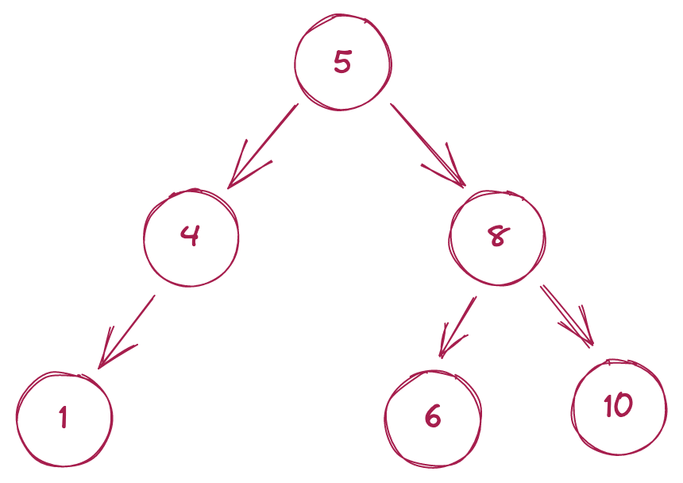

Несложно построить пример графа, содержащего n-1 ребро – например, можно взять одну вершину графа и соединить ее с n-1 ребром. Нетрудно также понять, что в таком графе не должно быть простых циклов (иначе в простом цикле можно выбросить одно ребро и граф останется связным). Такие графы называются деревьями.
Определение – деревом называется связный граф не содержащий простых циклов.
Нетрудно видеть, что в дереве нельзя удалить ни одного ребра, чтобы граф остался связным. Поэтому дерево является минимальным связным графом.
Основным свойством дерева является следующая теорема:
Дерево из n вершин содержит n-1 ребро.
Эту теорему можно доказать математической индукцией по n, используя лемму о висячей вершине – в каждом дереве есть хотя бы одна вершина степени 1. Эту вершину можно удалить и далее применить предположение индукции для меньшего числа вершин.
Можно показать, что эквивалентны следующие определения дерева:
1) Деревом называется связный граф не содержащий простых циклов.
2) Деревом называется связный граф, содержащий n вершин и n-1 ребро.
3) Деревом называется связный граф, который при удалении любого ребра перестает быть связным.
4) Деревом называется граф, в котором любые две вершины соединены ровно одним простым путем.
Очень часто в дереве выделяется одна вершина, называемая корнем дерева, дерево с выделенным корнем называют корневым или подвешенным деревом. Примером такого дерева является генеалогическое дерево.
Пример дерева

рис.3
Теоремы дерева и их доказательства
Доказательство первой теоремы:
I теорема
В дереве с более чем одной вершиной есть висячая вершина.
Пойдем из какой-нибудь вершины по ребрам. Так как в дереве нет циклов, то мы не вернемся в вершину, в которой уже побывали. Если у каждой вершины степень больше 1, то найдется ребро, по которому можно уйти из неё после того, как мы пришли в нее.
Но поскольку количество вершин в дереве конечно, когда-нибудь мы остановимся в некоторой вершине. Противоречие. Значит, когда-нибудь мы дойдём в висячую вершину. Если же начать идти из неё, то мы найдём вторую висячую вершину.
II теорема
В дереве число вершин на 1 больше числа ребер.
Доказательство второй теоремы:
Докажем по индукции по количеству вершин в дереве n. Если в дерево одна вершина, то факт верен Предположим, что для всех n < k мы доказали это факт. Найдём висячую вершину.
Граф, получающийся из исходного выкидыванием висячей вершины вместе с исходящим из нее ребром, очевидно, также является деревом — и в нём меньше на одну вершину и одно ребро. Значит для исходного графа также было верно доказываемое соотношение между количеством вершин и рёбер.
Верна и обратная теорема. Если в связном графе вершин на одну больше,чем ребер, то он является деревом.
Подграф называется остовным деревом, если он является деревом и множество его вершин совпадает с множеством вершин исходного графа.
III теорема
У любого связного графа есть остовное дерево.
Доказательство третьей теоремы:
Чтобы найти остовное дерево графа G, можно найти цикл в графе G и выкинуть одно ребро цикла — потом повторить. И так пока в графе не останется циклов. Полученный граф будет связным, так как мы выкидывали рёбра, не нарушая связность, но в нём не будет циклов. Значит, он будет деревом.